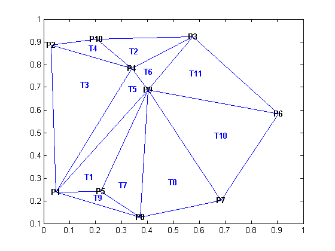
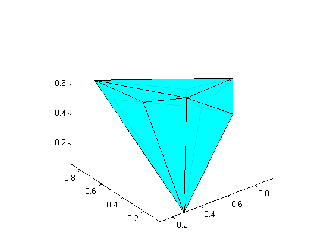
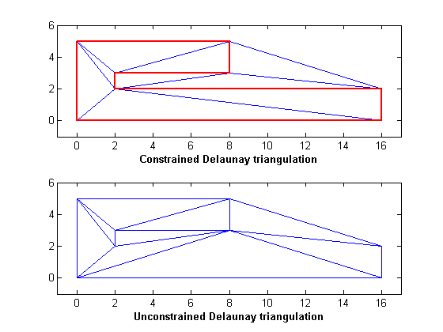
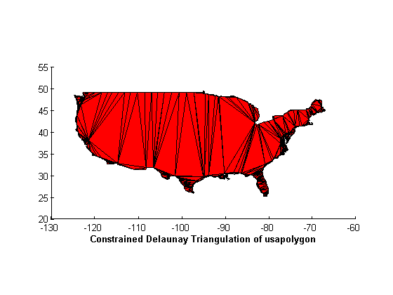
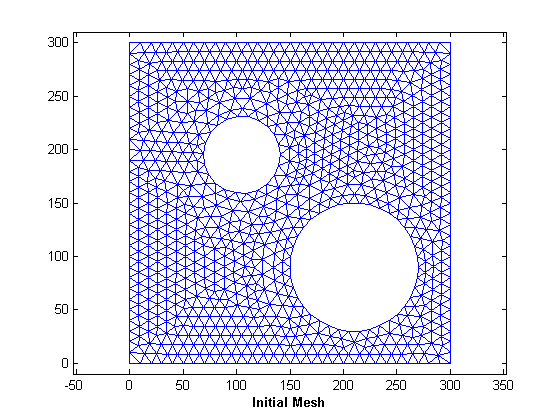
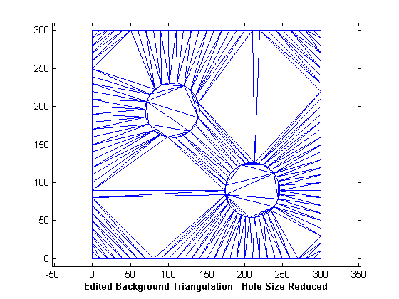
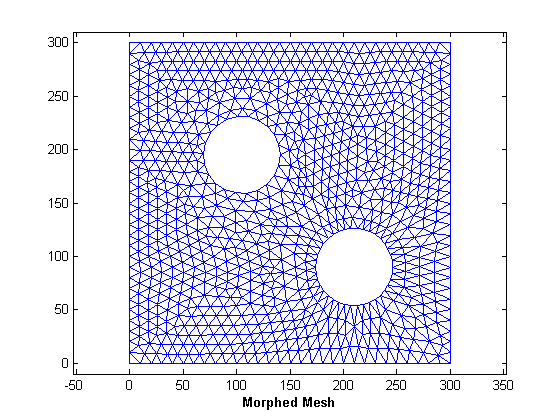

Delaunay 三角形分割の作成と編集
Delaunay 三角形分割は、科学計算で最も広く使われている三角形分割です。三角形分割に関するプロパティは、さまざまな幾何学的な問題を解決するための基礎を提供します。以下の例は、DelaunayTri クラスを使用して Delaunay 三角形分割の作成、編集、およびクエリ方法を示すデモです。中心軸の計算やメッシュのモーフィングに関するアプリケーションを使って、制約付き Delaunay 三角形分割の作成についてもデモを行います。
目次
例 1:2 次元 Delaunay 三角形分割の作成とプロット
この例は、2 次元 Delaunay 三角形分割を計算し、頂点と三角形のラベルと共に三角形分割をプロットする方法を示します。
x = rand(10,1); y = rand(10,1); dt = DelaunayTri(x,y)
dt =
DelaunayTri
Properties:
Constraints: []
X:[10x2 double]
Triangulation:[11x3 double]
triplot(dt); % % Display the Vertex and Triangle labels on the plot hold on vxlabels = arrayfun(@(n) {sprintf('P%d', n)}, (1:10)'); Hpl = text(x, y, vxlabels, 'FontWeight', 'bold', 'HorizontalAlignment',... 'center', 'BackgroundColor', 'none'); ic = incenters(dt); numtri = size(dt,1); trilabels = arrayfun(@(x) {sprintf('T%d', x)}, (1:numtri)'); Htl = text(ic(:,1), ic(:,2), trilabels, 'FontWeight', 'bold', ... 'HorizontalAlignment', 'center', 'Color', 'blue'); hold off
例 2:3 次元 Delaunay 三角形分割の作成とプロット
この例は、3 次元 Delaunay 三角形分割を計算し、三角形分割をプロットする方法を示します。
X = rand(10,3)
X =
0.7509 0.1978 0.4959
0.8229 0.4084 0.2697
0.2251 0.3626 0.6842
0.3867 0.1619 0.7480
0.4187 0.8935 0.3916
0.9358 0.4405 0.5588
0.1056 0.6703 0.7322
0.5313 0.2104 0.6116
0.6212 0.4711 0.5812
0.2803 0.0499 0.0706
dt = DelaunayTri(X)
dt = DelaunayTri Properties: Constraints: [] X:[10x3 double] Triangulation:[19x4 double]
tetramesh(dt, 'FaceColor', 'cyan'); % To display large tetrahedral meshes use the convexHull method to % compute the boundary triangulation and plot it using trisurf. % For example; % triboundary = convexHull(dt) % trisurf(triboundary, X(:,1), X(:,2), X(:,3), 'FaceColor', 'cyan')
例 3:三角形分割データの構造体にアクセス
三角形分割データの構造体にアクセスする 2 つの方法があります。1 つ目の方法は Triangulation プロパティを使用し、2 つ目の方法はインデックスを使用します。
10 個のランダム点から 2 次元 Delaunay 三角形分割を作成します。
X = rand(10,2)
X =
0.3742 0.5123
0.0336 0.4076
0.4061 0.2198
0.6580 0.2305
0.5752 0.4385
0.9760 0.9199
0.4416 0.3190
0.7778 0.2843
0.5695 0.3638
0.0211 0.4993
dt = DelaunayTri(X)
dt = DelaunayTri Properties: Constraints: [] X:[10x2 double] Triangulation:[12x3 double]
% The triangulation datastructure is;
dt.Triangulation
ans =
1 6 10
2 7 1
2 3 7
2 1 10
7 5 1
7 3 4
5 6 1
5 7 9
8 5 9
4 8 9
9 7 4
6 5 8
% Indexing is a shorthand way to query the triangulation.The format is % dt(i, j) where j is the j'th vertex of the i'th triangle, standard % indexing rules apply. % The triangulation datastructure is dt(:,:)
ans =
1 6 10
2 7 1
2 3 7
2 1 10
7 5 1
7 3 4
5 6 1
5 7 9
8 5 9
4 8 9
9 7 4
6 5 8
2 番目の三角形は以下のとおりです。
dt(2,:)
ans =
2 7 1
2 番目の三角形の 3 番目の頂点は以下のとおりです。
dt(2,3)
ans =
1
最初の 3 つの三角形は以下のとおりです。
dt(1:3,:)
ans =
1 6 10
2 7 1
2 3 7
例 4:点を挿入または削除するための Delaunay 三角形分割の編集
この例は、点を挿入または削除するために、インデックスベースの添字を使用する方法を示します。DelaunayTri をもう一度ゼロから新規作成するのではなく、小さな修正を行うために DelaunayTri を編集すると効率的です。この方法は、データセットが大きい場合に特に効率的です。
% Construct a Delaunay triangulation from % 10 random points within a unit square x = rand(10,1); y = rand(10,1); dt = DelaunayTri(x,y)
dt =
DelaunayTri
Properties:
Constraints: []
X:[10x2 double]
Triangulation:[13x3 double]
% Insert 5 additional random points
dt.X(end+(1:5),:)= rand(5,2)
dt =
DelaunayTri
Properties:
Constraints: []
X:[15x2 double]
Triangulation:[22x3 double]
5 番目の点の置き換え
dt.X(5,:) = [0, 0]
dt =
DelaunayTri
Properties:
Constraints: []
X:[15x2 double]
Triangulation:[22x3 double]
4 番目の点を削除
dt.X(4,:) = []
dt =
DelaunayTri
Properties:
Constraints: []
X:[14x2 double]
Triangulation:[20x3 double]
例 5:制約付き Delaunay 三角形分割の作成
この例は、簡単な制約付き Delaunay 三角形分割を作成する方法を示し、制約の効果を示します。
X = [0 0; 16 0; 16 2; 2 2; 2 3; 8 3; 8 5; 0 5]; C = [1 2; 2 3; 3 4; 4 5; 5 6; 6 7; 7 8; 8 1]; dt = DelaunayTri(X, C); subplot(2,1,1); triplot(dt); axis([-1 17 -1 6]); xlabel('Constrained Delaunay triangulation', 'fontweight','b'); % Plot the constrained edges in red hold on; plot(X(C'),X(C'+size(X,1)),'-r', 'LineWidth', 2); hold off; % Now delete the constraints and plot the unconstrained Delaunay dt.Constraints = []; subplot(2,1,2); triplot(dt); axis([-1 17 -1 6]); xlabel('Unconstrained Delaunay triangulation', 'fontweight','b');
例 6:地図の制約付き Delaunay 三角形分割の作成
隣接する米国の周辺部の地図を読み込みます。多角形を表す制約付き Delaunay 三角形分割を作成します。この三角形分割は、点集合の凸包で囲まれた領域にまたがります。多角形の領域内にある三角形を除去し、プロットします。メモ:データセットは重複するデータ点を含んでいます。すなわち、2 つ以上のデータ点が同じ位置にあります。重複する点を取り除いてから、DelaunayTri はそれに応じて制約を再度形成します。
clf load usapolygon % Define an edge constraint between two successive % points that make up the polygonal boundary. nump = numel(uslon); C = [(1:(nump-1))' (2:nump)'; nump 1]; dt = DelaunayTri(uslon, uslat, C); io = dt.inOutStatus(); patch('faces',dt(io,:), 'vertices', dt.X, 'FaceColor','r'); axis equal; axis([-130 -60 20 55]); xlabel('Constrained Delaunay Triangulation of usapolygon', 'fontweight','b');
Warning:Duplicate data points have been detected and removed. The Triangulation indices and Constraints are defined with respect to the unique set of points in DelaunayTri property X. Warning:Intersecting edge constraints have been split, this may have addednew points into the triangulation.
例 7:点群から曲線を再構成
この例は、点群から多角形の境界を再構成するための Delaunay 三角形分割の使用方法を示します。再構成は Crust アルゴリズムに基づきます。
参照:N. Amenta, M. Bern, and D. Eppstein. The crust and the beta-skeleton:combinatorial curve reconstruction.Graphical Models and Image Processing, 60:125-135, 1998.
% Create a set of points representing the point cloud
numpts=192;
t = linspace( -pi, pi, numpts+1 )';
t(end) = [];
r = 0.1 + 5*sqrt( cos( 6*t ).^2 + (0.7).^2 );
x = r.*cos(t);
y = r.*sin(t);
ri = randperm(numpts);
x = x(ri);
y = y(ri);
% Construct a Delaunay Triangulation of the point set.
dt = DelaunayTri(x,y);
tri = dt(:,:);
% Insert the location of the Voronoi vertices into the existing % triangulation V = dt.voronoiDiagram(); % Remove the infinite vertex V(1,:) = []; numv = size(V,1); dt.X(end+(1:numv),:)= V;
Warning:Duplicate data points have been detected and removed. The Triangulation indices are defined with respect to the unique set of points in DelaunayTri property X.
% The Delaunay edges that connect pairs of sample points represent the % boundary. delEdges = dt.edges(); validx = delEdges(:,1) <= numpts; validy = delEdges(:,2) <= numpts; boundaryEdges = delEdges((validx & validy), :)'; xb = x(boundaryEdges); yb = y(boundaryEdges); clf; triplot(tri,x,y); axis equal; hold on; plot(x,y,'*r'); plot(xb,yb, '-r'); xlabel('Curve reconstruction from a point cloud', 'fontweight','b'); hold off;

例 8:多角形領域の近似の中心軸の計算
この例は、制約付き Delaunay 三角形分割を使って多角形領域の近似の中心軸を作成するデモを行います。多角形の中心軸は、多角形内部の最大の円盤形の中心の位置で定義されます。
% Construct a constrained Delaunay triangulation of a sample of points % on the domain boundary. load trimesh2d dt = DelaunayTri(x,y,Constraints); inside = dt.inOutStatus();
% Construct a TriRep to represent the domain triangles. tr = TriRep(dt(inside, :), dt.X); % Construct a set of edges that join the circumcenters of neighboring % triangles; the additional logic constructs a unique set of such edges. numt = size(tr,1); T = (1:numt)'; neigh = tr.neighbors(); cc = tr.circumcenters(); xcc = cc(:,1); ycc = cc(:,2); idx1 = T < neigh(:,1); idx2 = T < neigh(:,2); idx3 = T < neigh(:,3); neigh = [T(idx1) neigh(idx1,1); T(idx2) neigh(idx2,2); T(idx3) neigh(idx3,3)]';
% Plot the domain triangles in green, the domain boundary in blue and the % medial axis in red. clf; triplot(tr, 'g'); hold on; plot(xcc(neigh), ycc(neigh), '-r', 'LineWidth', 1.5); axis([-10 310 -10 310]); axis equal; plot(x(Constraints'),y(Constraints'), '-b', 'LineWidth', 1.5); xlabel('Medial Axis of a Polygonal Domain', 'fontweight','b'); hold off;

例 9:2 次元メッシュを修正した境界に変形
この例は、領域の境界線への修正を調整するために 2 次元領域のメッシュを変形する方法を示します。
手順 1: データを読み込みます。変形するメッシュは、面と頂点の形式の三角形分割 trife、xfe、yfe で定義されます。
load trimesh2d clf; triplot(trife,xfe,yfe); axis equal; axis([-10 310 -10 310]); axis equal; xlabel('Initial Mesh', 'fontweight','b');
手順 2: 背景の三角形分割 - メッシュの境界を表す点集合の制約付き Delaunay 三角形分割を作成します。メッシュの頂点ごとに、背景の三角形分割に対して位置を定義する記述子を計算します。記述子はその三角形に対して重心座標と共に囲まれた三角形を表します。
dt = DelaunayTri(x,y,Constraints); clf; triplot(dt); axis equal; axis([-10 310 -10 310]); axis equal; xlabel('Background Triangulation', 'fontweight','b'); descriptors.tri = dt.pointLocation(xfe, yfe); descriptors.baryCoords = dt.cartToBary(descriptors.tri, [xfe yfe]);

手順 3: 領域の境界線を修正するために、背景の三角形分割を修正します。
cc1 = [210 90]; circ1 = (143:180)'; x(circ1) = (x(circ1)-cc1(1))*0.6 + cc1(1); y(circ1) = (y(circ1)-cc1(2))*0.6 + cc1(2); tr = TriRep(dt(:,:),x,y); clf; triplot(tr); axis([-10 310 -10 310]); axis equal; xlabel('Edited Background Triangulation - Hole Size Reduced', 'fontweight','b');
手順 4: 評価の根拠として、変形した背景の三角形分割を使用し、記述子を直交座標に戻します。
Xnew = tr.baryToCart(descriptors.tri, descriptors.baryCoords); tr = TriRep(trife, Xnew); clf; triplot(tr); axis([-10 310 -10 310]); axis equal; xlabel('Morphed Mesh', 'fontweight','b');